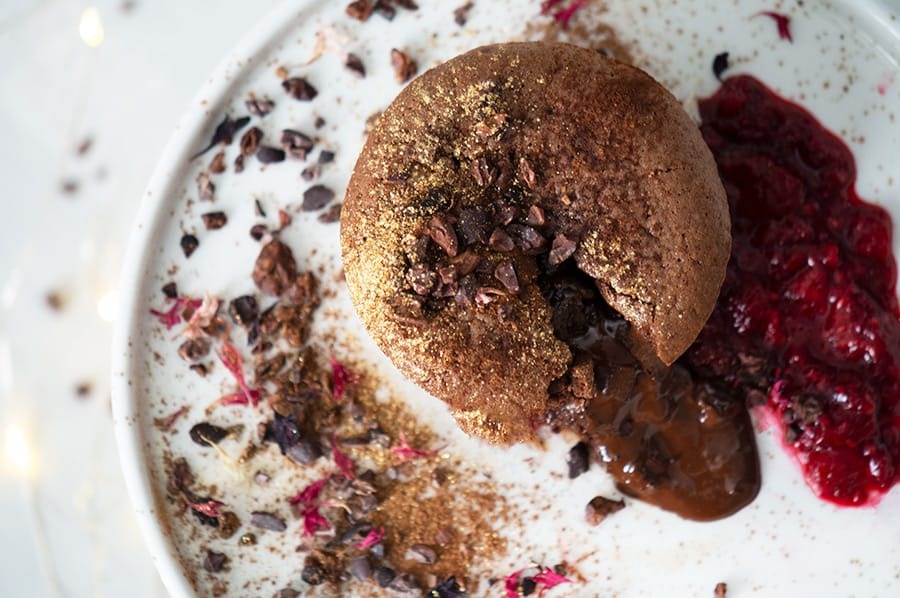
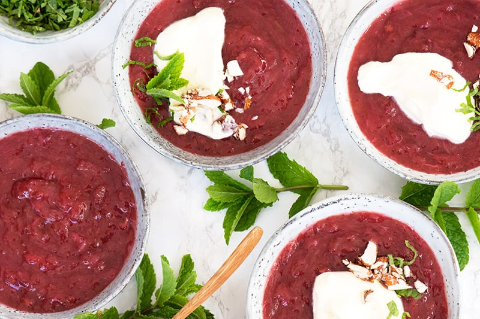

Chokoladefondant

6 pers.
Ingredienser
- 100 g mørk chokolade, finthakket
- 100 g smør
- 70 g sukker
- 3 æg, str. l
- 40 g hvedemel
Derudover
- 1 spsk smør, til formen
- 6 drys kakao, usødet, til drys
- kakaonibs, (kan undlades)
Tid:4 timer
Fremgangsmåde
Smelt smør ved lav varme i en gryde, tag derefter af varmen og rør chokoladen i. Rør til det er helt ensartet og chokoladen er helt smeltet.
Pisk æg og sukker sammen til det er luftigt og sukkerkornene er opløst, pisk derefter chokolade og smørblandingen i og vend til sidst hvedemelet i.
Smør 6 faste muffinsforme eller lignende form grundigt med smør og fordel dejen deri. Stil formen på køl i minimum 3 timer eller i fryseren i en time (de kan fint holde sig på frost i op til en måneds tid)
Bag dem direkte fra køleskab eller fryseren i en forvarmet ovn ved 180 grader varmluft.
Bages i 8-11 minutter, hvis det er fra køleskabet og i 15-18 minutter, hvis de er frosne.
Husk endelig at de skal være helt ubagte i midten.
Serveres mens de er helt friskbagte og varme.
Hasselnøddekurv
4 pers.
Ingredienser
- 40 g hasselnødder
- 25 g smør
- 2 spsk glukosesirup
- 50 g rørsukker
Tid: 40 minutter
Fremgangsmåde
Bag hasselnødderne i 10-15 minutter ved 150 grader varmluft, til hinderne løsnes og kan gnides af. Kom hasselnødderne på et rent viskestykke og brug det til at gnide hinderne af.
Kom derefter hasselnøddekernerne i en foodprocessor og blend til det er fint nøddemel. Tilsæt smør, sukker og glukosesirup og kør til det er ensartet.
Form 4 kugler, som trykkes lidt flade til en cirkel og kommes på en bageplade med bagepapir - lav endelig god afstand imellem dem, da de flyder meget ud.
Bag i en forvarmet ovn ved 175 grader varmluft i 9-11 minutter til de er flotte, gyldne og endnu stadig kan bøjes.
Tag dem ud af ovnen, lad dem køle af i et lille minut (endelig ikke længere) og vend dem over et lille glas, så de får en fin kurveform. Form dem evt lidt til hvis nødvendigt. Lad dem køle helt af.
De færdigbagte hasselnøddekurve kan pensles med chokolade og fyldes med is og frugt.
Rabarbergrød

4 pers.
Ingredienser
- 700 g rabarber
- 1 dl , vand
- 170 g sukker, + 2 spsk. sukker til drys
- 1 vaniljestang
- 1 spsk kartoffelmel, blandet med to spsk. koldt vand (kan undlades)
Mandelkrokant
- 50 g mandler
- 1 spsk honning
Derudover
- flødeskum, piskefløde, mælk eller vaniljeis
Tid: 4 timer
Fremgangsmåde
Skær rabarberne i skiver af cirka 1/2 cm. Kom dem i en gryde med vand, 150 g sukker, vanilje, samt den flækkede vaniljestang.
Lad det koge op og lad derefter grøden simre under låg i cirka 15-20 minutter.
Smag grøden til - hvis den ønskes sødere, så tilføj sukker til den er perfekt. Hvis grøden skal tyknes en smule, så gøres dette bedst med en smule kartoffelmel rørt op med koldt vand. Kom to spsk. grød i blandingen og bland derefter resten over i al rabarbergrøden (det sikrer at der ikke kommer klumper)
Kom rabarbergrød i serveringsskåle eller i en stor skål, som drysses med sukker - hvilket hjælper til at rabarbergrøden ikke trækker skind.
Stil grøden i køleskabet til den skal serveres.
Server rabarbergrød koldt med piskefløde, sødmælk eller lidt luftig flødeskum. Den smager også vidunderligt med en kugle vaniljeis.
Hurtig og nem mandelkrokant
Rist mandlerne på en sliplet pande, under omrøring til de er varme og dufter, hold øje med dem for de må endelig ikke brænde på.
Skrue helt ned for varmen, tilsæt honning og rør det godt sammen.
Varm op til honningen bruger og hæld derefter mandlerne over på bagepapir til afkøling og gør panden ren i kogende vand.
Hak derefter mandlerne groft.